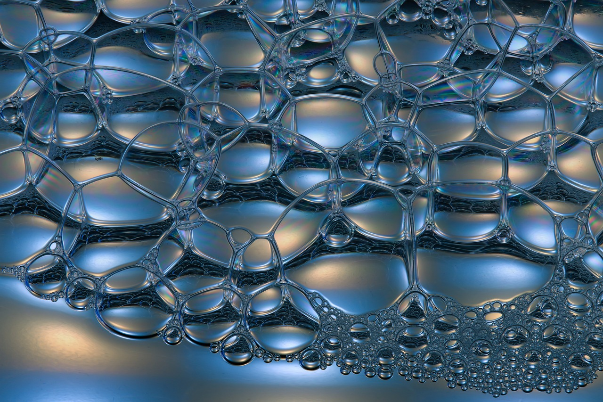

생명에너지의 퇴적층
‘생명에너지의 퇴적층’은 생명에너지가 한겹 한겹 쌓여 이루어진 생명에너지의 세력이다. 즉, 진기(眞氣)의 세력이다. 이것은 태양과 달의 관계, 자신의 생명에너지와 우주와의 교류, 그리고 호흡을 통해 그동안 정진(精進)을 통해 축적된 생명에너의 축적량이다.
생명에너지를 이 정도까지 축적을 시키면 그동안 수련자를 괴롭혀 왔던 많은 어려움 들이 해소되기 시작한다.
본격적으로 숨결이 탁 트이며 높은 호흡량을 감당할 수 있다. 호흡의 반응이 즉각 즉각 나타나기 시작하며, ‘이것이 과연 의미가 있을까?’ 의심이 되던 소주천과 대주천 등의 효과가 바로바로 현상화 된다.
단(丹)을 만들고자 하면 단(丹)이 만들어지고 심안(心眼)을 형성하려고 하면 심안(心眼)이 형성된다.
마치 지하수가 암반 3천미터에서 솟구치는 듯한 같은 강력한 압력이 느껴지기도 하며, 심해(深海)의 가장 밑바닥에 앉아 있는듯한 느낌이 현실적인 감각으로 느껴지기도 한다.
전신에 물컹물컹한 생명에너지가 느껴지기도 하며 청람한 빛의 포말을 일으키며 몸체에 경락이 꿈틀 거리 거나 진동이 느껴진다. 또한, 자신과 우주의 생명에너지가 교류를 하면서 가만히 있어도 생명에너지의 축적이 느껴진다.

다만 컴컴한 심연(深淵)에 잠겨 있는듯한 감각도 가끔 느껴지기에 처음에는 조금 두려운 느낌도 든다. 이때 가족이 옆에 잠을 자며 코를 골거나 조금만 뒤척여도 크게 안심이 느껴지며 오히려 기쁨으로 느껴진다. 그러나 사정상 그럴 수가 없다면 이는 안정감을 만들어 내는 지혜도 필요할 것이다.
하지만 이는 단지, 감각일 뿐 크게 걱정할 필요는 없다.
절정에 이르면 몸체가 공중으로 빨려 들어가는 감각이 느껴지기도 하며 습관적으로 의자 손잡이 등 지상에 있는 부착물을 잡게 되거나 걸음을 걸을 때면 위에 고압선이 없나 걱정하기에 이른다. 실제로 공중으로 빨려 들어가며 한참 머물다가 서서히 내려오기도 한다.
수련을 마치고 걸음을 걸을 때 발걸음이 빨라지기도 하고, 바람처럼 달리기도 한다.
물론, 생명에너지의 퇴적층도 도입기, 진행기, 성숙기, 절정기, 감소기의 순환에 영향을 받기 때문에 매일 이렇게 되지는 않는다.
아무튼, 기분 좋은 현상임에 두말할 필요는 없을 것이다.